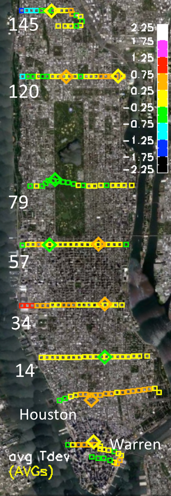
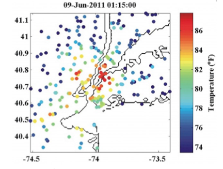

|  |
OverviewRecent work by CCRUN collaborators (Kinney et al) have shown that heat related mortality rates depend very sensitively on temperature. Field campaigns conducted by the City College of New York (CCNY) health team exhibit consistent temperature differences between Manhattan neighborhoods on the order of several degrees centigrade. Finding ways to map and predict these differences is the purpose of the work described here. Studies of the Urban Heat Island (UHI) tend to lack the high resolution data needed to differentiate the effects of different building materials and vegetation on the temperature differences between neighborhoods. Though satellite imagery is useful for identifying surface characteristics (buildings, vegetation, albedo), applying thermal infrared imagery in a environment like Manhattan would result in temperature estimates biased towards rooftop rather than street level. To address the temperature measurment issue, two types of field compaigns have recently been completed in Manhattan. A suite of sensors to measure temperature and relative humidity are deployed by foot simultaneously to measure environmental conditions at high spatial resolution during the hottest part of the day. A set of 10 fixed sensors have also been deployed at selected locations to measure temperature, humidity and sunlight at high temporal resolution. The spatial and temporal variability sampled by the two campaigns provide complementary information that may help predict environmental variability throughout Manhattan. The goal is to produce Manhattan-wide (and eventually city wide) temperature maps based on temperatures from a few stations (or a weather forecast) combined with local surface characteristics and basic weather conditions such as cloudiness, wind, and humidity. The data sets used to create these temperature models will be posted in the links to the right as they become available. These data sets complement a suite of environmental instruments curated by the New York City MetNet. Researchers on this project are Reza Khanbilvardi, Mark Arend, Brian Vant-Hull, Rouzbeh Nazari, and Maryam Karimi. Contact and research information can be found on the NOAA-CREST Website. NOAA-CREST is a research institute on the Campus of the City College of New York, affiliated with the National Oceanographic and Atmospheric Administration (NOAA). |
 from "Forecasting the New York City urban heat island and sea breeze during extreme heat events". Meir, Orton, Pullen, Holt, Thompson and Arend in Weather and Forecasting |
Dataset CreationThe creation and processing of these datasets and images is described in detail.
|
For questions or comments contact Brian Vant-Hull: brianvh@ce.ccny.cuny.edu